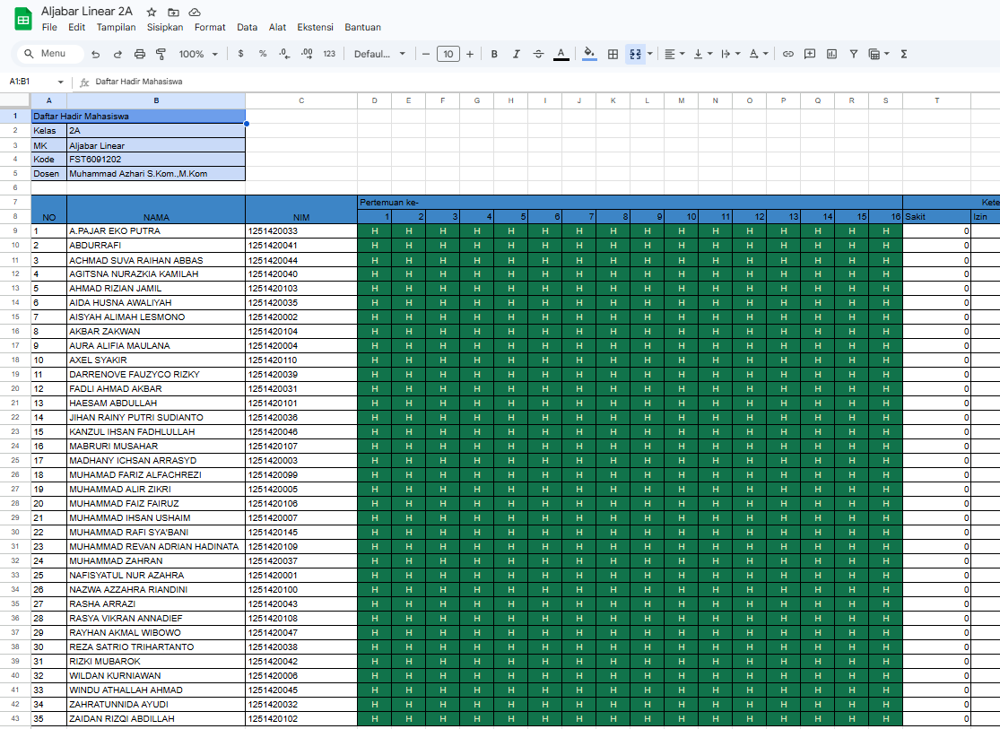

| KODE MK | NAMA MK | HARI | WAKTU KULIAH | NAMA DOSEN | SKS | RUANGAN AIS | RUANGAN E-SEMESTA | KETERANGAN | MBKM |
|---|---|---|---|---|---|---|---|---|---|
| FST6091120 | Statistika Informatika | Senin | 10:15 - 12:45 | Luh Kesuma Wardhani, S.T., M.T. | 3 | - | A.509 | - | - |
| FST6091102 | Pemrograman Lanjutan | Selasa | 07:30 - 10:00 | Dr. Imam Marzuki Shofi, M.T. / Ir. Nashrul Hakiem, Ph.D | 3 | - | B.503 | - | - |
| NAS6112202 | Pendidikan Pancasila | Selasa | 10:15 - 11:55 | Nurul Faizah Rozy, MTI | 2 | - | A.509 | - | - |
| FST6091202 | Aljabar Linear | Selasa | 13:00 - 15:30 | Muhamad Azhari, S.Kom.,M.Kom | 3 | - | A.502 | - | - |
| FST6091104 | Sistem Digital | Rabu | 07:30 - 10:00 | Nenny Anggraini, S.Kom, MT | 3 | - | B.501 | - | - |
| FST6091122 | Matematika Informatika I | Rabu | 13:00 - 15:30 | Anif Hanifa Setianingrum, M.Si | 3 | - | A.509 | - | - |
| UIN6032202 | Islam dan Ilmu Pengetahuan | Kamis | 07:30 - 10:00 | Drs.M. Tabah Rosyadi, M.A. | 3 | - | A.509 | - | - |
| KODE MK | NAMA MK | HARI | WAKTU KULIAH | NAMA DOSEN | SKS | RUANGAN AIS | RUANGAN E-SEMESTA | KETERANGAN | MBKM |
|---|---|---|---|---|---|---|---|---|---|
| FST6091120 | Statistika Informatika | Senin | 07:30 - 10:00 | Luh Kesuma Wardhani, S.T., M.T. | 3 | - | A.509 | - | - |
| FST6091202 | Aljabar Linear | Senin | 13:00 - 15:30 | Muhamad Azhari, S.Kom.,M.Kom | 3 | - | A.509 | - | - |
| NAS6112202 | Pendidikan Pancasila | Selasa | 07:30 - 10:00 | Nurul Faizah Rozy, MTI | 2 | - | A.509 | - | - |
| FST6091102 | Pemrograman Lanjutan | Selasa | 10:15 - 12:45 | Dr. Imam Marzuki Shofi, M.T. / Ir. Nashrul Hakiem, Ph.D | 3 | - | B.503 | - | - |
| UIN6032202 | Islam dan Ilmu Pengetahuan | Selasa | 13:00 - 15:30 | Drs.M. Tabah Rosyadi, M.A. | 3 | - | A.509 | - | - |
| FST6091122 | Matematika Informatika I | Rabu | 07:30 - 13:00 | Anif Hanifa Setianingrum, M.Si | 3 | - | A.509 | - | - |
| FST6091104 | Sistem Digital | Jumat | 07:30 - 10:00 | Herlino Nanang, M.T., PhD | 3 | - | B.501 | - | - |
